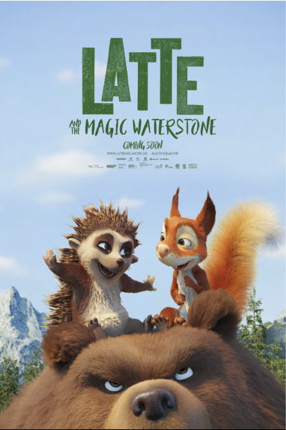

|  |
|---|
Latte Magic Waterstone เนื้อเรื่องย่อ : ตัวเรื่องเริ่มจากตัวเม่นสาวน้อยที่ชื่อ “ลาเต้” อาศัยอยู่ตัวเดียวโดดเดี่ยวไม่มีใครในครอบครัว มีแค่เพื่อนกระรอกหนุ่มน้อย “จุม” มาคอยเล่นด้วยไปวันๆ ในขณะที่ป่าแห่งนี้เริ่มแห้งหืดไม่มีน้ำ กลุ่มสัตว์จึงต้องพึ่งพากันรวบรวมน้ำไว้แบ่งปัน แต่แล้วลาเต้กับจุมกลับพลาดไปทำที่เก็บน้ำแตก จนเป็นเรื่องราวผจญภัยให้ตามหาน้ำกลับมาจากตำนานที่นกแก่ในป่าเล่าว่ามีหมีร้ายขโมยหินศักสิทธิ์ที่ให้กำเนิดน้ำไป จึงทำให้ป่าแห้งแล้ง พวกเขาจึงต้องเดินทางไปตามหาว่าตำนานนี้มีจริงหรือ ติมตามต่อได้ที่ลิ้งก์ด้านล่างได้เลยค่ะ
สามารถดูเต็มๆได้ที่ Netflix คลิกที่ลิ้งก์
|
|---|
 |
|---|